Copyright ©1995 by NeXT Computer, Inc. All Rights Reserved.
| 15 |
Building a Simple Application
| Even the simplest application that presents the user with a graphic interface represents a staggering amount of programming effort. If each developer had to start from scratch, few applications would make it to completion. Fortunately, NEXTSTEP--through its integrated software kits and programming tools--dramatically reduces your workload in creating such applications.
NEXTSTEP's object-oriented software kits let your application benefit from numerous years of software development and testing, providing you with the elements (windows, buttons, text- and image-handling objects, and so on) that most applications require. Interface Builder dramatically simplifies the task of assembling and interconnecting these elements and helps you create new, reusable elements of your own. Overseeing the entire development process is Project Builder. Project Builder keeps track of the elements that make up your application, gives you access to other development tools, builds your application, and helps you with many other details. The project presented in this chapter will give you a taste of application development using NEXTSTEP. You'll create a complete, though content-free, application using Interface Builder to assemble "off-the-shelf" objects from the Application Kit and then build the application using Project Builder. The objectives of this project are twofold: |
| To introduce NEXTSTEP's main development tools: Interface Builder and Project Builder. | ||
| To give you an understanding of your part in the application-development process by showing you which parts can be done entirely with Project Builder and Interface Builder. |
| Creating a Project |
| The first step in building any NEXTSTEP application is to use Project Builder to create a project. A project is a directory of files under the control of Project Builder.
Start Project Builder from the Workspace Manager, either from its location in /NextDeveloper/Apps/ProjectBuilder or from the dock, if its icon is there. When the application starts, it displays its main menu. Choose New from the Project menu. The Open panel that appears has two points of interest. First is the Name field, which suggests "PB.project". This is the standard project file that Project Builder uses to record the elements and dependencies within a project. Second is the pop-up list that indicates that the type of project being built is an application. For clarity, a new project should be created in its own directory, so let's create a directory for this project. Enter "Simple" in the Name field--overwriting "PB.project"--and press Return. (You don't have to specify PB.project. By default Project Builder adds this file to a new project directory.) A Project window titled "Simple" appears. |
| 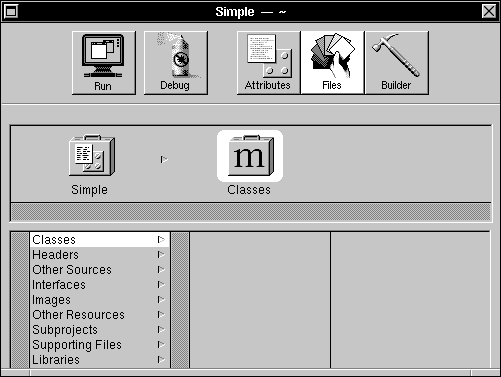 |
| Figure 15-1. The Project Window
The five buttons at the top of the window give you access to Project Builder's main commands and displays. The buttons have these functions: |
| 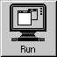 | Builds the application (if necessary) and then runs it. | |
| Builds the application (if necessary) and then runs it in debugging mode using GDB and Edit. | ||
| 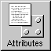 | Shows the Attributes display, which lets you set the application's name, associated icon, installation directory, and other attributes. | |
| 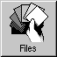 | Shows the Files display, which gives you access to the files that make up the project. | |
| 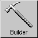 | Shows the Builder display. This display lets you specify compiler and linker options and view messages generated during the build process. |
| Let's take a look at the three different displays.
Click the Attributes button. This display lets you set some of the global attributes of your project, such as its name, the icon the application displays in the workspace, where the finished application will be installed in the file system, and other features: |
| 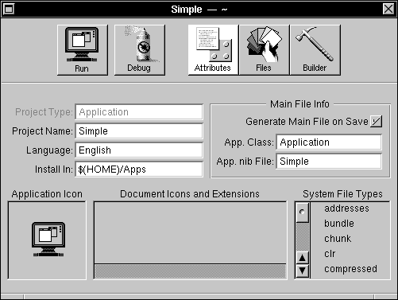 |
| Figure 15-2. Project Builder's Attributes Display
You'll learn more about the Attributes display during the course of this project and the others in the following chapters. Click the Files button. The Files display gives you an organized view of the files that make up your application. (See Figure 15-1 above for an illustration.) The left column lists the types of source files, and, for a selected type, the right column (or columns) displays the names of any files of that type that your project contains. Finally, click the Builder button. |
| 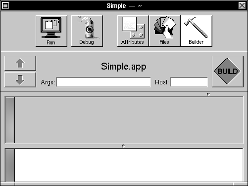 |
| Figure 15-3. Project Builder's Builder Display
You use this display to control how your application is built. For example, using the Args field, you can specify whether a debugging or an optimized version of the application will be built. Using the Host field, you can specify that the application be compiled and linked on some other computer on the network, thus reducing the load on your computer. Return to the Files display by clicking the Files button. If you click the different entries in the Files display, you'll notice that Project Builder has already created these files for the Simple project: |
| Type | File | |
| Other Sources | Simple_main.m | |
| Interfaces | Simple.nib | |
| Supporting Files | Makefile |
| In addition, the standard shared libraries, Media_s and NeXT_s, are listed under Libraries. Their entries are listed in gray since you can't remove them.
Simple_main.m is the project's main program file, the source file that contains the entry point (that is, the main() function) for the Simple application. You can open this (or any) file listed in the Files display by double-clicking the file name in the browser. Double-click Simple_main.m in the browser to see how this works. Leave the file unchanged, however, since Project Builder maintains it for you. When you're through viewing the file, close the Edit window. Simple.nib is a template interface file that Project Builder has added to the project. In "Creating the User Interface" below, we'll examine and edit this file, so don't open it yet. The flag image next to the file's name indicates that its contents may require "localization," that is, adaptation of its text, images, and sounds for speakers of different languages. Project Builder helps you create and maintain localized versions of your application. Finally, Makefile, a specification file for the UNIX make utility, lists the files and dependencies for building your project. As with Simple_main.m, don't modify the contents of this file; Project Builder maintains it for you. With this short introduction to Project Builder's main features, you are ready to move on to the next step: assembling your application's user interface. |
| Creating the User Interface |
| As a starting point for an application's user interface, Project Builder supplies new projects with a template user interface file. In our case, this file is listed as Simple.nib under the Interfaces entry of Project Builder's Files display. You use Interface Builder to modify the contents of this file.
Switch to Project Builder's Files display and double-click Simple.nib to start Interface Builder. Interface Builder starts and displays several windows. Before beginning work on the interface, let's take a short look at Interface Builder itself. As an application that helps you build applications, Interface Builder displays both its own windows and those of the application under construction. In this case, the window titled "My Window" and the menu titled "Simple" belong to your application; the other windows are Interface Builder's. At the upper left of the screen is Interface Builder's main menu, at the upper right is the Palettes window, and at the lower left is a window titled "Simple.nib". This last window is referred to as the File window, since it has the title of the nib file and it gives you access to the contents of that file. |
| 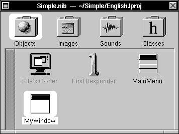 |
| Figure 15-4. The File Window
A File window's title displays the name of the nib file and its directory location. Below the title is a row of icons. These icons correspond to the objects and resources in the nib file. The four icons give you access to these displays: |
| Display | Use |
| Objects | Shows the top-level objects within your application | |
| Images | Displays the image resources available to your application. | |
| Sounds | Displays the sound resources available to your application. | |
| Classes | Displays a hierarchical listing of the classes available to your application. |
| Initially, the first icon is highlighted, indicating that the File window shows the Objects display. In the upper left corner of the display is an icon representing the nib file's owner. The two objects named "MainMenu" and "MyWindow" correspond to the Menu and Window objects in the nib file. The object titled "First Responder" represents the object that at run time has first responder status within MyWindow.
Within the File window, you can edit an object's name by selecting the object and then clicking its name. Only object names that are displayed in black can be edited, however. Changing an object's name has no effect on the object's class; it only changes the name Interface Builder uses to keep track of the various objects within your application. For now, however, leave the default names. |
| Adding and Editing Objects |
| Perhaps the easiest operation in Interface Builder is adding objects to an application: You simply drag the object from the Palettes window to the desired destination in your application. Before beginning, let's look at some features of the Palettes window.
The Palettes window by default has four distinct displays, represented by the four buttons near the top. (Note, however, that more palettes can be loaded into the Palettes window--see Chapter 18 for more information.) The left button gives you access to Menus and MenuCells, the next to Windows, the next to Basic Views, and the last to Scrolling Views: |
| 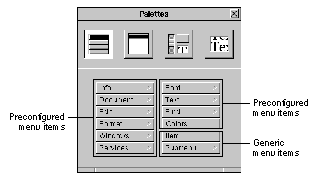 |
| Figure 15-5. Menu Palette |
| 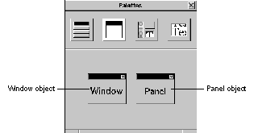 |
| Figure 15-6. Window Palette |
| 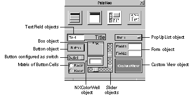 |
| Figure 15-7. Basic Views Palette |
| 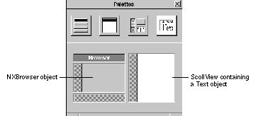 |
| Figure 15-8. Scrolling Views Palette
Let's add some objects to the application. First, make sure the Basic Views palette is displayed. Drag a Button object from the Palettes window into your application's standard window. |
| 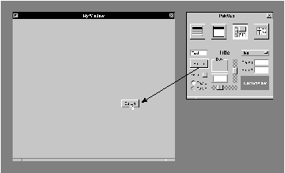 |
| Figure 15-9. Adding a Button to Your Application
Notice that as you drag the button over the destination window, the cursor changes to the copy cursor, indicating that if you release the mouse button, the object will be copied into the window. Release the mouse button, and the Button object drops into the window. Eight small gray squares, or control points, appear around the button. These control points indicate that the button is selected. You can manipulate these points to change the object's shape and size. Dragging a corner control point adjusts the object's width and height simultaneously. Dragging a side control point adjusts only its width or height, depending on the point. |
| 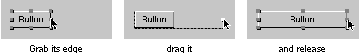 |
| Figure 15-10. Resizing an Object
To move the entire object, press the mouse button while the cursor is within the rectangular area delimited by the object's control points and drag--taking care not to drag one of the control points. You can constrain the object to move only vertically or horizontally by Command-dragging it. If you start Command-dragging vertically, for example, no horizontal motion is possible until you release the mouse button and begin dragging again. Let's add another button to the window. You could drag a second button from the Palettes window, but instead, try copying and pasting the existing button. First make sure the button is selected (its control points should be visible) and then choose the Copy and then Paste commands from the Edit menu. A second button appears overlapping the first. Notice that the second button is now selected and the first is not. Drag the second button to one side of the first. When you select one object within the window, its control points appear and the previously selected object's control points disappear. To select all the objects in a window, use the Select All command in the Edit menu. You can also select a group of objects in a window by "rubberbanding," dragging out a rectangular area that includes or intersects the objects. |
| 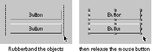 |
| Figure 15-11. Selecting Objects by Rubberbanding
Selected objects can be moved as a group by moving any one of them, and they can be cut, copied, or pasted by using the corresponding commands in the Edit menu. The Cut, Copy, and Paste commands work within a single window, between windows in the same project, and even between windows in different projects. You can edit the text displayed by an object by double-clicking the text. Edit the title of one button to read "On". |
| 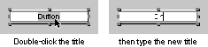 |
| Figure 15-12. Editing an Object's Text
To edit an object's attributes that can't be easily manipulated graphically, Interface Builder provides an Inspector panel for the particular object. The Button Inspector, for example, lets you set the type and appearance of a button, among other things. To display the Button Inspector, first make sure the On button is selected and then choose the Inspector command from the Tools menu. The Inspector panel appears. This panel's title changes to reflect the object that is being inspected; it reads "Button Inspector" since the button is selected. The Inspector panel has multiple displays accessed by the pop-up list at the top of the panel. The other displays will be discussed in this and later chapters; for now, let's work with the Attributes display. Using the Button Inspector, let's configure the On button to be a button that toggles between two states labeled "On" and "Off". |
| 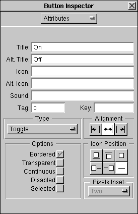 |
| Figure 15-13. The Button Inspector
In the Inspector panel, type "Off" in the text field labeled "Alt. Title" (Alternate Title). Next, set the button type by pressing the Type pop-up list and dragging to the Toggle option. You can check the operation of this button in a moment when you test the interface. Before leaving the Inspector panel, let's use it to change the title of the application's standard window. Select the window titled "MyWindow" (by clicking anywhere within its boundaries or by double-clicking its icon in the File window). The display in the Inspector panel changes from the Button Inspector to the Window Inspector. Notice that the Window Inspector (as shown in Figure 15-13) lets you set the window's title, class, and other attributes. |
| 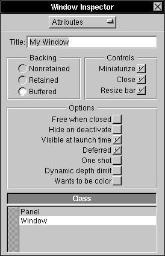 |
| Figure 15-14. The Window Inspector
Change the window's title to "Test Window" or another title of your choice. Notice that when you begin to alter the window's title, the Inspector panel's close button changes to display a partially drawn "X," indicating that your changes haven't yet been applied to your application's window. When you press Return, Interface Builder applies the changes to the window's title. Before continuing, choose the Save command from the Document menu to save the work you've done so far to the nib file, Simple.nib. |
| Laying Out the Interface |
| You can arrange the top-level components of your application--its windows and panels--through direct manipulation. For example, to specify where a window will appear at run time, simply drag it to that position within Interface Builder. (Menus don't obey this system, however. No matter where you place the menu during development, when the application runs, the menu follows the NeXT user interface guidelines by appearing at the upper left corner of the screen--unless the user specifies a different location using the Preferences application.) To change a window's size, you use one of two methods, based on whether the window will be resizable when the program runs. If it will be, resize it with the resize bar as you normally would. If at run time its size is fixed (as with an application's Info panel), you have to make it temporarily resizable within Interface Builder by clicking the resize button in the title bar.
Interface Builder provides a large selection of layout tools to help you arrange objects within your application's windows. To experiment with these tools, arrange the two buttons in your application's window so that one partially covers the other, and then open the Layout menu (choose Format from the main menu, and then choose Layout). Select one button and then alternately select Bring to Front and Send to Back to see what these commands do. Next, choose Size to Fit. This command resizes an object so that it just accommodates it contents. Select both buttons (you could "rubberband" them or click one button and then hold down Shift while you click the other) and choose Same Size. One button is resized to match the other button. (The object you select last is resized to match the size of the object that's selected first, unless this would cause it to be resized to less than its minimum size.) Now, with both buttons selected, choose Group. This command has two effects: It visually groups selected objects by surrounding them with a box, and it makes the selected objects subviews of the surrounding box. Notice that if you move the surrounding box, the buttons, being subviews, move with it whether or not they're selected. To move a button within the box, double-click within the box. A gray border appears indicating that the editing focus is now within the box. Once the focus is on the box's contents, you can manipulate the individual buttons as you normally would. This is the pattern for editing grouped objects. For example, if a button is grouped in a box that in turn is grouped within another box, you can edit the button's title by double-clicking the outer box, then the inner box, and then the button itself. To remove a surrounding box without destroying its contents, select the box and then choose the Ungroup command. You can also group objects within a ScrollView. Select both buttons again and choose the Group in ScrollView command from the Layout menu. A ScrollView appears around the two buttons; however, no scroll knobs are visible. Again, double-clicking within the ScrollView allows you to manipulate the grouped objects individually. Double-clicking within the ScrollView changes the editing focus to the ScrollView's document view within the ScrollView. Once the focus is on the document view, you can manipulate the grouped objects individually and you can resize the document view. Notice that as you move the cursor toward the top or right side of the ScrollView, the cursor's image changes to that of the resizing cursor. When this cursor image is displayed, you can press the mouse button and drag the side of the document view to change the view's size. Experiment with this feature and notice how resizing the document view affects the sized of the scroll knobs. The Make Row and Make Column commands align a series of selected objects vertically or horizontally. If you select several objects and then click Make Row, the objects form a row to the right of the object that was nearest the left edge of the window. Similarly, clicking Make Column causes the objects to line up under the object that was nearest the top edge of the window. Add three or four switches from the Palettes window to your application's window and experiment with these commands. The Turn Grid On command turns on an alignment feature in all your application's windows, making it easier to create pleasing layouts. Choose the Turn Grid On command and then drag one of the switches. Notice that the switch moves in small increments both vertically and horizontally. Click Show Grid to make the alignment grid visible as a rectangular pattern of gray dots. You'll notice that when you move an object, the object's lower left corner jumps from dot to dot. The grid is visible only while you're building the application. It has no effect on your application's appearance in test mode or at run time. Both of these commands toggle, so a second click turns the feature off. The Alignment command opens a panel that affects how the alignment commands in the Layout menu work. |
| 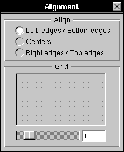 |
| Figure 15-15. The Alignment Panel
The radio buttons let you set the part of an object's frame rectangle that's used as the reference point by the Make Column and Make Row commands. By default, objects are aligned according to their lower left corners. However, by clicking one of the other choices, you can align them according to their centers or their top right corners. Using the slider in the Grid group, you can set the spacing of the alignment grid. Experiment with these controls, if you wish. Any of the Controls in the Views palette--in other words, the Slider, TextField, and Button objects--can be made into matrices of objects by holding down Alternate while dragging one of the object's control points. For example, drag a Button into the window. While holding Alternate down, drag one of the corner control points diagonally across the window. When you've dragged the point far enough to make room for more Buttons, these objects appear. Try dragging the point vertically and then horizontally. In this way, you can make a row, column, or two-dimensional array of buttons. You can manipulate a Slider or TextField in the same way, but you can drag a Form only into a column. If you need a row or two-dimensional configuration of a Form object, you must create it programmatically. The objects in a matrix act as a unit: Dragging one drags the entire matrix. To eliminate one or more objects from a matrix, hold down Alternate and resize the matrix so that the object or objects you want to eliminate fall outside the new limits of the matrix. The spacing between objects in a matrix can be controlled by dragging a control point of a matrix while holding Command down. Experiment by dragging out a column of buttons and then stretching the matrix by holding down Command and dragging a control point. To select one of the objects in a matrix, double-click the object. The object's highlighting indicates that it's selected. By double-clicking a second time, you can edit the text displayed in the object. Editing the text in each of the objects in a matrix is made easier by the use of Tab to move from object to object. For example, edit the text in one button in the matrix of buttons. Press Tab, and you can immediately edit the text of the next button in the matrix. By repeatedly pressing Tab, you can access each of the objects in the matrix. Shift-Tab reverses the direction of motion so that the selection moves to the previous object. Add examples of the other Application Kit objects from the Basic Views palette, but don't add a CustomView. The CustomView object is a proxy for a View subclass you write. By supplying this proxy, Interface Builder lets you specify the size, placement, and other parameters of a View subclass you'll supply. A later project will demonstrate the use of a CustomView object. Also for now, don't take anything from the other palettes; you'll use these palettes in the later projects. Note: Remember that you can remove an object from the application's window by selecting it and choosing the Cut command. |
| Testing the Interface |
| To run the application in test mode, choose the Test Interface command from the Document menu. All of Interface Builder's windows disappear, leaving your application's windows on the screen. To indicate that it's in test mode, Interface Builder's application icon changes to display a large switch. Finally, your application's main menu moves to the upper left corner of the screen.
Your application's interface can now be tested. Even though it's running under Interface Builder, it should behave--with two small exceptions--as if it were a stand-alone program. The exceptions are in the way the Hide and Quit menu commands operate. When your application is running in test mode, it doesn't display its application icon. Consequently, after you choose the Hide command, there's no way to recall your application's windows to the screen. To make your application's windows visible again, double-click Interface Builder's application icon. This restores your application to the screen and exits test mode. The Quit command, rather than quitting your application, exits test mode. In all other respects, your application's interface operates normally. Buttons highlight when you click them, text in text fields can be edited, radio buttons work as you would expect. In the normal course of application development, you'll probably pass through the build and test modes several times until you're sure your application's interface is perfect. After that, you'll write the code for any custom objects your application requires, compile the application, and then run it. In the next section, you'll see how to compile and run this sample application. Before going on, choose the Save command from the Document menu to save your work. |
| Preparing to Compile the Application |
| Before compiling the application, let's take a look at the pieces Project Builder has provided. If you look in the project directory, you'll see these entries: |
| language.lproj (A directory where language is English, French, or another language.) | ||
| Makefile | ||
| PB.gdbinit | ||
| PB.project | ||
| Simple.iconheader | ||
| Simple_main.m |
| The ".lproj" directory contains files that are specific to a particular language or cultural context. In the case of the Simple application, only its nib file, Simple.nib, has elements (menu commands and button titles, for instance) that would have to change if the application were to be in a different language environment. Thus, this directory contains only the nib file. (It may also contain a backup file. A backup file is marked with a trailing tilde character (~) and contains the previous version of the file. For example, the backup file for Simple.nib is Simple.nib~.)
Makefile, the file that coordinates the compilation process, is constructed from information in PB.project. Don't make changes to this file; Project Builder maintains this file for you. (However, by adding a Makefile.preamble or Makefile.postamble file, you can supplement the instructions in the standard makefile.) PB.gdbinit contains initialization commands for the debugger, GDB. Again, don't alter this file since Project Builder maintains it for you. PB.project contains a simple ASCII listing of your project's attributes, such as its name, installation directory, and source files. Project Builder uses this information to construct the makefile, among other things. Simple.iconheader contains information that the Workspace Manager will use to relate icons with the application and its documents. The last file, Simple_main.m, is the main program file. This file contains the main() function, the entry point for execution. You may, on occasion, need to edit this file directly. Let's take a closer look at Makefile and the main program file.
Makefile Makefile controls the compilation and linking of the elements that make up your application. Project Builder generates the makefile and fills in the names of your application's source files in the appropriate spots: |
 #
#
 # Generated by the NeXT Project Builder.
# Generated by the NeXT Project Builder.
 #
#
 # NOTE: Do NOT change this file -- Project Builder maintains it.
# NOTE: Do NOT change this file -- Project Builder maintains it.
 #
#
 # Put all of your customizations in files called Makefile.preamble
# Put all of your customizations in files called Makefile.preamble
 # and Makefile.postamble (both optional), and Makefile will
# and Makefile.postamble (both optional), and Makefile will
 # include them.
# include them.
 #
#
 NAME = Simple
NAME = Simple
 PROJECTVERSION = 1.1
PROJECTVERSION = 1.1
 LANGUAGE = English
LANGUAGE = English
 LOCAL_RESOURCES = Simple.nib
LOCAL_RESOURCES = Simple.nib
 MFILES = Simple_main.m
MFILES = Simple_main.m
 OTHERSRCS = Makefile
OTHERSRCS = Makefile
 MAKEFILEDIR = /NextDeveloper/Makefiles/app
MAKEFILEDIR = /NextDeveloper/Makefiles/app
 INSTALLDIR = $(HOME)/Apps
INSTALLDIR = $(HOME)/Apps
 INSTALLFLAGS = -c -s -m 755
INSTALLFLAGS = -c -s -m 755
 SOURCEMODE = 444
SOURCEMODE = 444
 ICONSECTIONS = -sectcreate __ICON app
ICONSECTIONS = -sectcreate __ICON app
 /usr/lib/NextStep/Workspace.app/application.tiff
/usr/lib/NextStep/Workspace.app/application.tiff
 LIBS = -lMedia_s -lNeXT_s
LIBS = -lMedia_s -lNeXT_s
 DEBUG_LIBS = $(LIBS)
DEBUG_LIBS = $(LIBS)
 PROF_LIBS = $(LIBS)
PROF_LIBS = $(LIBS)
 -include Makefile.preamble
-include Makefile.preamble
 include $(MAKEFILEDIR)/app.make
include $(MAKEFILEDIR)/app.make
 -include Makefile.postamble
-include Makefile.postamble
 -include Makefile.dependencies
-include Makefile.dependencies
| You shouldn't alter this makefile; Project Builder maintains it for you. Notice that it lists the name of your application and the source files that are specific to it. It lists the libraries that the linker uses to create the finished application, and it defines the Apps directory (within your home directory) as the installation directory for the finished application.
The last four lines let this makefile include as many as four other files: |
| Makefile.preamble | ||
| app.make | ||
| Makefile.postamble | ||
| Makefile.dependencies |
| app.make is always included; the other files are included only if they're present. No error occurs if they're not. app.make is the standard NeXT makefile. The ability to include other files lets you add additional rules to this standard makefile.
Simple_main.m This file contains your application's main() function: |
 /* Generated by the NeXT Project Builder
/* Generated by the NeXT Project Builder
 NOTE: Do NOT change this file -- Project Builder maintains it.
NOTE: Do NOT change this file -- Project Builder maintains it.
 */
*/
 #import <appkit/Application.h>
#import <appkit/Application.h>
 void main(int argc, char *argv[]) {
void main(int argc, char *argv[]) {
 [Application new];
[Application new];
 if ([NXApp loadNibSection:"Simple.nib" owner:NXApp withNames:NO)
if ([NXApp loadNibSection:"Simple.nib" owner:NXApp withNames:NO)
 [NXApp run];
[NXApp run];
 [NXApp free];
[NXApp free];
 exit(0);
exit(0);
 }
}
| This file starts by importing appkit/Application.h for its declaration of the Application class and the NXApp global variable, which refers to the Application object.
Note: A fast way to determine where a specific constant, function, or method is declared is to use Digital Librarian to search the files in /NextDeveloper/Headers. It then creates a new Application object and sends a loadNibSection:owner:withNames: message to it to load the nib file. The loadNibSection:owner:withNames: method locates the correct nib file based on the user's current language preference. (See the Application class description for more information.) Assuming the nib file is found, the objects archived in it are loaded, and then the Application object is sent a run message. At this point the application becomes responsive to the user. When the user chooses the Quit command, the event loop terminates and the final message is sent, freeing the application's objects. The last statement calls exit(), a standard C library function that terminates the process. |
| Compiling the Application |
| Compiling the application is the next step. You can compile and run the application in one step by clicking Project Builder's Run button.
When you click the Run button, Project Builder switches to the Builder display and begins building your application. While the build proceeds, its progress is reflected in various ways, as indicated in Figure 15-16. |
| 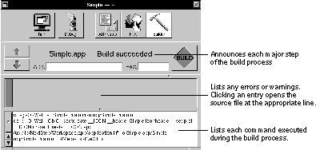 |
| Figure 15-16. Building Simple.app |
| Running the Application |
| When the building process is finished, your application begins running. When your application's windows appear, you can verify its operation.
Although limited in scope, this simple application incorporates many of the attributes of a larger program. It responds to mouse and keyboard input and allows simple text editing. In addition, its window can be dragged and resized, and the application can hide itself when the user chooses the Hide command. Before going on to the next project, you might try altering the interface and then rebuilding the application. Rebuilding will take little time, since changing the interface alters only the nib file, not any files that must be recompiled. |